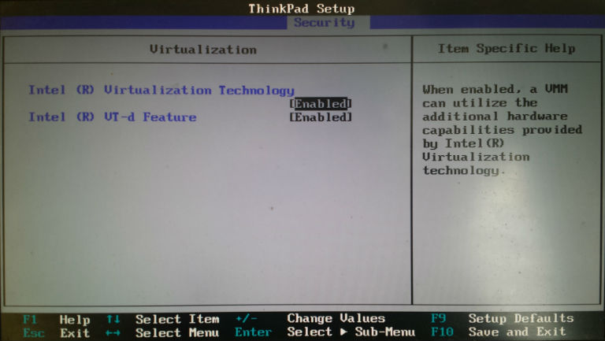

Troubleshooting
In case you face a problem related to importing the VM, please check the following.
Windows OS
The following steps are for Windows Machines:
- Reboot your machine
- During
the reboot process, and before the Windows Logo appears, keep pressing
( F2 or F1 or F10 or F8 or Delete or ESC, sometimes it is
different key. Pay close attention to the initial screen when you press
the power button. It will say which key to press to get to the Setup menu.). But act quickly. If the Windows starts then go back to step 1.
- This will open the BIOS menu
- The menu will be very different depending on BIOS version and processor type. But navigate till "Security" menu.
- Ensure
that VT-x (for Intel Processors) or AMD-v (for AMD processors) are
enabled. You will have something similar to Figure 1 below.
- Save and exit the BIOS
- The machine will reboot.
- Start
virtualBox --> select the VM (cso) from the left handside. --> go
to settings of the VM --> System --> Acceleration --> ensure
that "Enable VT-x/AMD-v" is activated
If you are still facing a problem, please send it to the course mailing list and we will do our best to help.

Figure 1: An example BIOS security menu (source)
MAC OS
Type of error you may get: "verr_cfgm_node_exist"
- Open VirtualBox GUI
- go to the the new VM (imported appliance)
- select USB tab
- disable USB
- enable USB
- start the new VM (imported appliance)
If
this does not work, do the above steps except at steps 4 and 5,
instead of disabling USB change it to another type (e.g. change it to
USB 3).